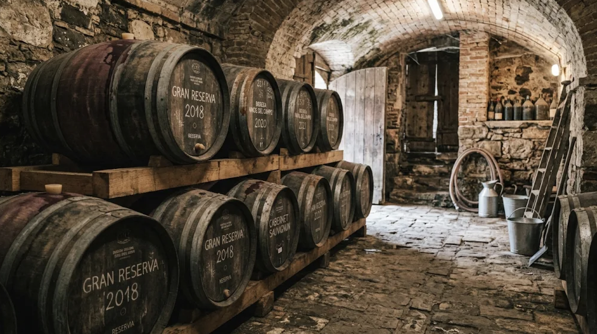
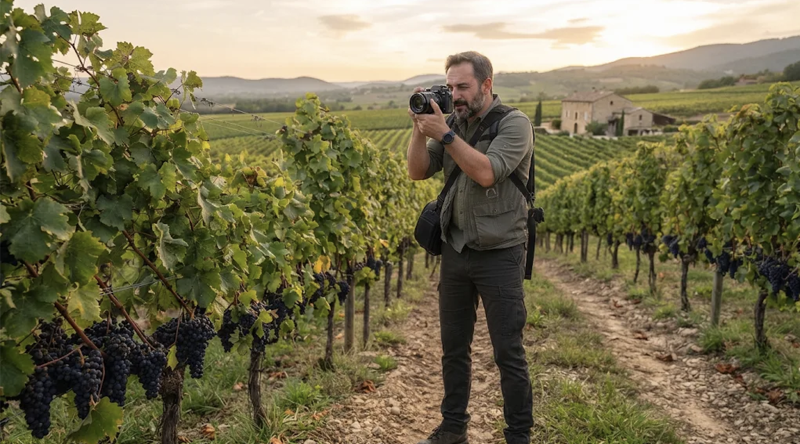

Transporte coordinado
Salida y regreso desde el centro de Colón, con recorrido organizado entre fincas y bodegas del departamento.
Enoturismo · Colón, Entre Ríos
Un bus vitivinícola guiado que sale desde Colón y conecta fincas y bodegas de la microrregión Tierra de Palmares. Transporte coordinado, degustaciones, maridajes regionales y un fotógrafo profesional a bordo.


Patrimonio vivo
La vitivinicultura colonense nació a mediados del siglo XIX, de la mano de familias inmigrantes europeas que plantaron las primeras vides en el actual departamento de Colón.
En 1934 la Ley Nacional N.° 12.137 interrumpió esa producción. El camino se retomó desde 1993 y hoy se expresa en fincas, bodegas y vinos de perfil propio que vuelven a contar esa historia.
Origen inmigrante
Familias europeas plantan las primeras vides y fundan las bodegas familiares de la zona.
Interrupción
La Ley Nacional N.° 12.137 detiene la producción vitivinícola de la región.
Renacer
La actividad se retoma y vuelve a expresarse en fincas, bodegas y vinos propios.
La experiencia
Enoturismo, turismo cultural y turismo rural en una misma jornada: el paisaje, el relato y los sabores de la vid colonense.
Salida y regreso desde el centro de Colón, con recorrido organizado entre fincas y bodegas del departamento.
Acompañamiento especializado en patrimonio vitivinícola, paisaje y cultura rural de Tierra de Palmares.
Copas guiadas en cada parada, con la explicación de quienes elaboran los vinos locales.
Gastronomía entrerriana pensada para acompañar los vinos de perfil propio de la microrregión.
Registro profesional de la jornada, mini álbum digital y una breve clase de fotografía de paisaje y viñedos.
Caminatas entre hileras de vides y el ritmo tranquilo del campo colonense.
Dos formas de recorrer
Ambas incluyen transporte, guía, degustaciones y fotógrafo. La diferencia está en el tiempo, las paradas y los maridajes.

Media jornada · 4 horas
Tres paradas en fincas y bodegas del departamento de Colón, con degustación guiada y fotógrafo profesional a bordo. Ideal para quien visita Colón y quiere sumar una jornada distinta.
Precio por persona
$48.000

Jornada completa · 7 horas
Tres paradas, almuerzo con maridaje, caminata por el viñedo y fotografo profesional a bordo. La experiencia completa del camino del vino colonense.
Precio por persona
$82.000
Salidas regulares viernes, sábados y domingos. Los valores son por persona e incluyen transporte, guía y degustaciones según modalidad.
Nuestro diferencial
Un fotógrafo profesional acompaña cada salida: registra la jornada, entrega un mini álbum digital y dicta una breve clase de fotografía de paisaje y viñedos para que te lleves tus propias tomas.
Registro de la experiencia
El fotógrafo viaja en el bus y retrata la jornada sin interrumpir el recorrido.
Mini álbum digital
Recibís una selección editada de las fotos del día, lista para compartir.
Clase de fotografía
Una introducción breve al paisaje y al viñedo: luz, encuadre y composición.

Antes de subir
Si te queda alguna duda, escribinos por el formulario de reserva y te respondemos dentro de las 24 horas.
Reservar mi lugar